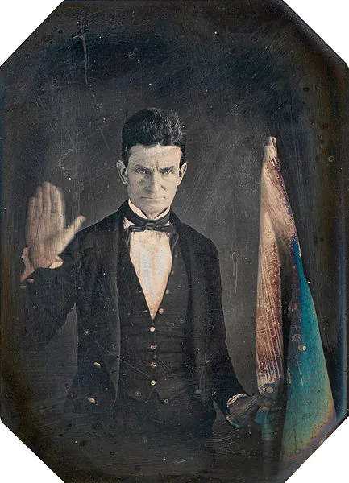
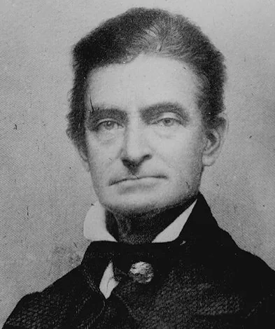
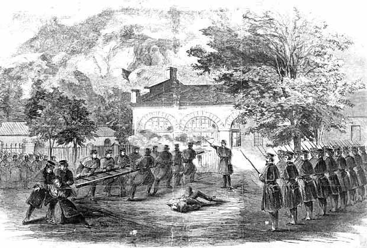

John Steuart Curry, Tragic Prelude (detail). Kansas State Capitol. Image from the original PowerPoint.
Background image: John Steuart Curry's mural Tragic Prelude, with a giant John Brown holding a rifle and a Bible over a battlefield of Union and Confederate figures.
From the Bleeding Kansas slide
Bleeding Kansas
Sack of Lawrence (May 21, 1856)
Proslavery mob wrecked and burned hotel and newspaper office
Pottawatomie Massacre
Antislavery band led by John Brown retaliates, kills several proslavery settlers
Anti-Racism
Abolitionism
18th century: Enlightenment thinkers and Quakers begin to criticize slavery
Moral disapproval becomes widespread
All northern states abolish slavery between 1777 and 1804
International slave trade prohibited in 1807 as allowed by constitution
Now Abolitionists turn attention to Southern States
Anti-Racism
William Lloyd Garrison
Influenced by New England Federalism and Christian benevolence
Newspaper editor: served a year in jail for libeling a slave trader merchant
1831 Established the Liberator
1833 Organizes the American Anti-Slavery Society
Increasingly radical
Rejects church and state
Publicly burns copy of constitution: "No Union with Slaveholders"
The Man Who Killed Slavery, Sparked the Civil War, and Seeded Civil Rights
Militant abolitionist
influenced by father and boyhood acquaintance of a black boy during War of 1812
Influenced also by Christianity
Following Kansas-Nebraska Act Brown moves with his sons to Kansas
Border Ruffians and Sack of Lawrence radicalizes John Brown
Swears Vengeance

John Brown. Daguerreotype, about 1846-47, often attributed to Augustus Washington. Image from the original PowerPoint.
John Brown
The Man Who Killed Slavery, Sparked the Civil War, and Seeded Civil Rights
Retaliates on Pottawatomie Creek

John Brown. Photograph, mid-1850s. Image from the original PowerPoint.
Pottawatomie massacre
A True Story
The original PowerPoint speaker notes pointed to the lecture note Pottawatomie Massacre: A True Story. The full text of that document is in the Independent Study section, and in the Study Buddy notes on those slides. Nothing from the document has been cut.
Initiated South's Misreading of the North as rabid abolitionists
Changed Terms of Slavery Struggle
Previously, abolitionists seen as cowards, now as ferocious criminals
Aroused New Emotion in Slavery's Defenders: FEAR
"there is no one for whom the ruffians entertain a more wholesome dread than Captain Brown. They hate him as they would a snake, but their hatred is composed of 9/10ths fear"
Significance of Pottawatomie
Initiated South's Misreading of the North as rabid abolitionists
Changed Terms of Slavery Struggle
Previously, abolitionists seen as cowards, now as ferocious criminals
Aroused New Emotion in Slavery's Defenders: FEAR
Set Stage for Eventual "deification" of Brown
Raid on Harpers Ferry
Intent on igniting slave insurrection
Proposed to attack and capture federal arsenal at Harpers Ferry, Virginia
October 16, 1859 Brown and 18 followers captured arsenal
U.S. Marines under the command of Lieutenant Colonel Robert E. Lee put down the raid; they wounded Brown and killed or captured most others
Played on Southern fears of slave rebellion

The storming of the engine house at Harpers Ferry, October 1859. Image from the original PowerPoint.
White southerners realized threat to security not over
Changed public opinion in south
Viewed Republican party as embodiment of John Brown's view
Thomas Hovenden, The Last Moments of John Brown, 1882-84. Image from the original PowerPoint.
Martyrdom of John Brown
Moved the boundary of acceptable thoughts and deeds regarding slavery
Captured attention of the nation like no other abolitionist
Willingness to die for the right had a moral force
"John Brown's Body" and Battle Hymn of Republic
Northern sympathy shocks and outrages South
The gaze of Europe is fixed at this moment on America ... [Hanging Brown] will open a latent fissure that will finally split the Union asunder. The punishment of John Brown may consolidate slavery in Virginia, but it will certainly shatter the American Democracy. You preserve your shame but you kill your glory.Victor Hugo
Pierian Spring
Independent Study
Optional: go deeper on your own
Today's lecture ends here. If you want to go deeper, the stories below continue on your own. There is nothing to turn in.
"A little learning is a dang'rous thing; Drink deep, or taste not the Pierian spring."Alexander Pope, An Essay on Criticism (1711)
In the early afternoon of Friday, May 23, Brown and seven others rolled out of the Ottawa Creek camp in a lumber wagon. They were armed with rifles, revolvers, and broadswords. As they left, cheers erupted from those left behind.
Brown conducted the group to a grassy ravine in the woods a mile north of Dutch Henry's Crossing. The eight men spent the night and the following day there, making preparations for the attack. Brown declared that it was time to "fight fire with fire," to "strike terror in the hearts of the proslavery people." He insisted that it was "better that a score of bad men should die than that one man who came here to make Kansas a Free State should be driven out."
Around 10 o'clock at night on Saturday, May 24, the men seized their weapons and walked a mile north on California road to Mosquito Creek, wading across it to the area near the Pottawattamie where the proslavery settlers lived.
Near the Doyle property, two savage bulldogs attacked them, barking furiously. They killed one of dogs with a sword; the other fled howling into the woods.
Independent Study · A True Story
The Doyle Cabin
In the cabin James Doyle, his wife, Mahala, and their six children lay asleep. A sharp rap on the door drew Doyle out of bed. He asked the identity of the caller and was answered by a man asking directions to Alan Wilkinson's house. As soon as Doyle opened the door to explain, five armed men barged into the house. The leader, John Brown, who wore a straw hat and a black cravat, announced that they were from the northern army and were taking Doyle prisoner. Mahala Doyle, bursting into tears, cried to her husband, "Haven't I told you what you were going to get for the course you have been taking?" He grumbled, "Hush, mother, hush."
Brown's band led James Doyle and his two oldest sons 200 yards up the road that led into the woods. At that point, the mob fell on them, hacking away with the heavy swords. In the melee, horrible wounds were inflicted. Drury Doyle's fingers and arms, raised to fend off blows, were severed, and his head and chest were gashed. His brother was stabbed through the head, jaw, and side. The father was stabbed in the chest. Although John Brown did not participate in the attack, he fired a single shot into the head of the senseless James Doyle to make sure of death.
Independent Study · A True Story
Wilkinson, Sherman, and the Return to Camp
The group then proceeded half a mile to the cabin of Allen Wilkinson. His wife roused him when she heard the dog barking outside, but he mumbled that it was only passersby and dozed off again. In a few minutes loud knocking brought him to the door. He asked the callers who they were. The reply was a shouted request for directions to Dutch Henry's cabin. He began to answer but was told to come out and show the way.
When he opened the door, he found himself surrounded by four men. He was asked curtly to explain his position on slavery. When he indicated that he opposed the Free State party, one of them declared, you are our prisoner." 150 yards from the cabin he was slashed to death, stabbed in the head and side. They heaved his body into dead brush.
The final victim, William Sherman, was staying at the home of a proslavery friend on the other side of the Pottawattamie. By this time, midnight has passed. The pious John Brown, once so careful about observing the Sabbath that he accepted no visitors on Sunday, was now prepared to kill on that day. They led Sherman to the edge of the creek, where they killed him with the broadswords. The next morning his partly submerged body was found. There was a deep hole in the chest, and one of his hands was sliced off, connected to the arm only by a piece of skin. Brains oozed into the creek through a gash in the skull.
The bloody work was done. Having confiscated horses and other property from his victims, Brown and his followers washed their swords in the creek and then rode back to the camp on Middle Ottawa Creek.
As it turned out, God was the only judge John Brown would have to face for the Pottawattamie murders. Vigilante justice rules in the territory, and many previous killings over the slavery issue had gone unpunished. Although a proslavery court issued an indictment for the arrest of Brown on charges of murder, the case was not taken up immediately due to the chaotic state of the Kansas legal system. In the meantime, Brown and his followers hid out in the wilderness, resurfacing occasionally to battle proslavery forces. By the end of September, he had left Kansas for the East to raise funds for his war against slavery.
Independent Study · After the story
What Pottawatomie Did to the Nation
If Pottawattamie had only a minimal impact on slavery in Kansas, it was destined to have a huge impact on the nation. It initiated the South's misreading of the North as aggressively abolitionists. Although Pottawattamie was unprecedented in abolitionist panels, Southerners called it characteristic of the northern anti-slavery party.
Brown had changed the terms of the slavery struggle. Before Pottawattamie, the abolitionists were considered laughable cowards who either shirked war, as at Lawrence, or could be whipped into submission, as in the caning of Charles Sumner. After it, they seemed like ferocious criminals intent on attacking southern institutions.
John Brown had aroused a new emotion in slavery's defenders: fear of Northerners. As a contemporary observer noted, "there is no one for whom the ruffians entertain a more wholesome dread than Capt. Brown. They hate him as they would a snake, but their hatred is composed of 9/10ths fear."
If Pottawattamie fanned Southern hostility, it also set the stage for his eventual deification among Northerners. It made John Brown a marked man in Kansas, and border ruffians and federal forces pursued him. It was his stubborn resistance to capture in the aftermath of Pottawattamie that nurtured the legend of this seemingly superhuman heroism, a legend that eventually gained widespread currency in the North.
Sources
The lecture
Steven Austin, Chapter 14 The Gathering Tempest - Rev FA25 PowerPoint, especially slides 19 and 23-38, last modified October 22, 2025.
Earlier version: Chapter 14 The Gathering Tempest, November 26, 2024, which adds a final Video Documentary Assignment slide not used in this FA25 conversion.
Pottawatomie Massacre: A True Story, lecture note in John Brown and Anti-Racism, 2021, used in full in Independent Study.
Images (from the original PowerPoint)
John Steuart Curry, Tragic Prelude, Kansas State Capitol.
John Brown, daguerreotype, about 1846-47, often attributed to Augustus Washington.
John Brown, photographic portrait, mid-1850s.
The storming of the engine house at Harpers Ferry, period engraving, 1859.
Thomas Hovenden, The Last Moments of John Brown, 1882-84.
Audio: 01 - John Browns Body.mp3, from the original PowerPoint folder.